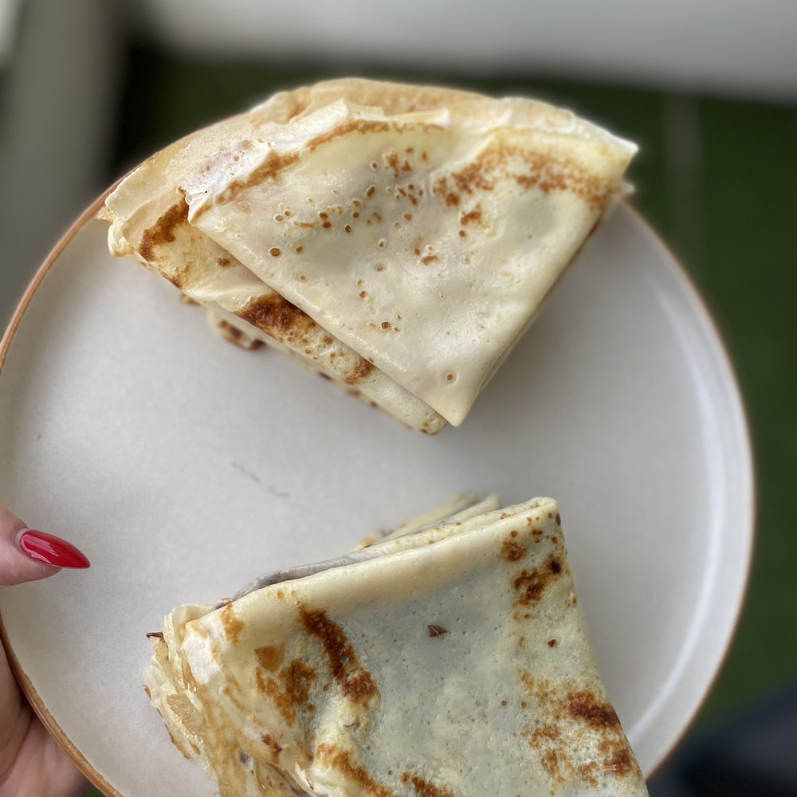

Goûter · Crêpes
Les crêpes de Pierre Hermé
La recette du maître, simple et sans reproche : fines, souples, et bonnes nature.
123kcal / part
12parts
5,1 gprotéines
14,8 gglucides
Ingrédients
- 200 g de farine
- 3 g de sel
- 4 œufs
- 500 g de lait entier
- 60 g d'eau
- 20 g de beurre fondu
- Un peu de beurre pour la poêle
Préparation
- Mélangez la farine et le sel dans un saladier, puis creusez un puits au centre.
- Cassez les œufs dans le puits. Fouettez d'abord au centre, en ramenant la farine petit à petit : c'est ce geste qui évite les grumeaux.
- Versez le lait froid en filet, toujours en fouettant, jusqu'à obtenir une pâte lisse et fluide. Ajoutez l'eau : elle allège la pâte et rend les crêpes plus fines.
- Incorporez le beurre fondu tiède. Si quelques grumeaux résistent, passez la pâte au chinois.
- Filmez au contact et laissez reposer 1 heure à température ambiante. La farine s'hydrate et les crêpes se déchirent beaucoup moins.
- Chauffez une poêle à feu moyen et beurrez-la très légèrement, au papier absorbant. Versez une petite louche en tournant la poêle pour répartir la pâte.
- Comptez 45 secondes à 1 minute, jusqu'à ce que les bords se décollent et dorent, puis retournez pour 30 secondes.
- Empilez les crêpes sur une assiette au fur et à mesure : elles restent souples en s'attendrissant les unes les autres.
L'astuce d'ElsaL'eau est le petit secret de cette pâte : elle remplace une partie du lait, allège le résultat et donne des crêpes plus fines et plus dentelées. Et une pâte qui a reposé se travaille toujours mieux qu'une pâte fraîchement faite.
Voir cette recette en mode cuisine